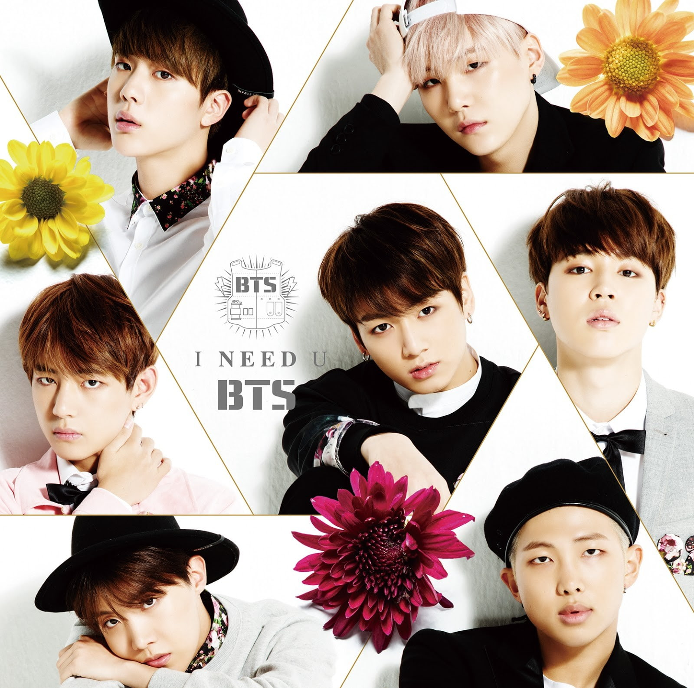

JIN,SUGA
VISUAL
BANGTAN@example.com

RM,J-HOPE
RAPPERS
BIGHIT@example.com

JK,V,JIMIN
MANAKE LINE
BTS@example.com
BTS won major awards at the Golden Disc and Seoul Music Awards in January 2018.[107][108] In March, the group premiered an eight-episode documentary titled Burn the Stage that offered a behind-the-scenes look at their 2017 Wings Tour, exclusively on YouTube Premium.[109][110] Their third Japanese studio album, Face Yourself, was released on April 4, 2018,[111] and quickly reached the top 5 of the U.S iTunes Albums chart. A nine-minute short film, titled Euphoria: Theme of "Love Yourself: Wonder" and featuring the song "Euphoria", followed the next day as a prelude to the group's third Korean-language studio album, Love Yourself: Tear.[112] BTS promoted Tear's May 18, 2018 release with an appearance at the 25th Billboard Music Awards two days later,[113] where they made their initial BBMA performance with their single, "Fake Love".[114][115] The group also won Top Social Artist for a second consecutive time.[116][117] The album coincided with the "轉" or "turn" of the series, touching on the tortuous enlightenment of loving without being loved, the pains and sorrows of separation, and providing encouragement to those without dreams.[118]
Since their formation, BTS have believed that telling their own stories is the best way for the younger generation to relate to their music.[310] Writing many of their own lyrics,[311][312] the group discusses universal life experiences such as sadness and loneliness in their work and turn them into something lighter and more manageable. RM stated that BTS tries to avoid a preaching or reprimanding tone in their songs "because that's not the way that we want to spread our message ... We're born with different lives, but you cannot choose some things. So we thought that love, the real meaning of it, starts with loving ourselves and accepting some ironies and some destinies that we have from the very start."[313] When asked if it is difficult to write about things like mental health, Suga responded, We feel that people who have the platform to talk about those things really should talk more, because they say depression is something where you go to the hospital and you're diagnosed, but you can't really know until the doctor talks to you ... More and more, I think artists or celebrities who have a voice should talk about these problems and bring it up to the surface
VISUAL
BANGTAN@example.com
RAPPERS
BIGHIT@example.com
MANAKE LINE
BTS@example.com